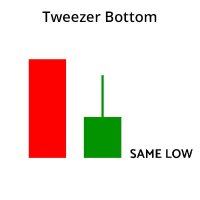

ट्वीज़र बॉटम कैंडलस्टिक पैटर्न एक बुलिश रिवर्सल कैंडलस्टिक पैटर्न है जो डाउनट्रेंड के अंत में बनता है।
इसमें दो कैंडलस्टिक होते हैं, पहला कैंडलस्टिक बुलिश होता है और दूसरा कैंडलस्टिक बियरिश होता है।
दोनों कैंडलस्टिक लगभग या एक ही नीचे के बनते हैं।

| What does Tweezer Bottom Candlestick Pattern tell us? |
जब ट्वीजर बॉटम कैंडलस्टिक पैटर्न बनता है तो पहले ट्रेंड डाउनट्रेंड होता है।
एक बियरिश ट्वीजर कैंडलस्टिक बनता है जो चल रहे डाउनट्रेंड का जारी रखने की तरह दिखता है।
अगले दिन, दूसरे दिन के बुलिश कैंडल का लो एक सपोर्ट स्तर दर्शाता है।
सबसे नीचे के कैंडल्स जिनकी लो लगभग समान होती हैं, सपोर्ट की ताकत दर्शाते हैं और यह भी संकेत देते हैं कि डाउनट्रेंड उलट सकता है और एक अपट्रेंड बन सकता है।
इसलिए बुल्स इस पर कार्रवाई करते हैं और कीमत को ऊपर ले जाते हैं।
बुलिश रिवर्सल अगले दिन बुलिश कैंडल बनाने से पुष्टि होता है।
| Importance of this pattern: |
जब ट्रेडर चार्ट पर ट्वीज़र टॉप और बॉटम कैंडलस्टिक पैटर्न का निर्माण देखते हैं, तो वे सावधान होना चाहिए कि एक उलटाव होने वाला है।
इस रिवर्सल पैटर्न का निर्माण होने पर वे अपनी पोजीशन को स्क्वायर ऑफ कर देना चाहिए।
वे टेक्निकल इंडिकेटर के साथ ट्वीज़र कैंडलस्टिक पैटर्न के निर्माण की पुष्टि भी करना चाहिए।
| Key Takeaways: |